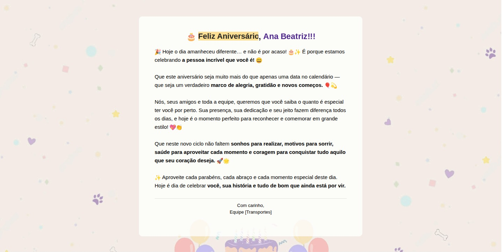
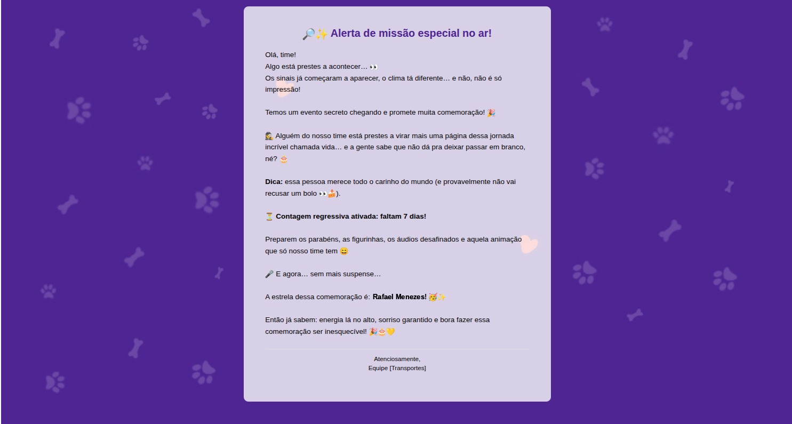

Formação em Logística
Base sólida em operações, cadeia de suprimentos e gestão de processos.
Logística · Finanças · Dados
Transformo processos manuais em fluxos inteligentes — com visão orientada a dados e impacto real no negócio.

Sou profissional com formação em Logística e especialização em andamento na área de Dados. Com 4 anos de experiência, atuo na interseção entre operações, finanças e análise — identificando oportunidades de melhoria e transformando processos manuais em fluxos inteligentes.
Ao longo da minha trajetória, desenvolvi 4 automações que otimizaram processos estratégicos antes inexistentes na organização, com foco em eficiência, rastreabilidade e redução de retrabalho.
Tenho experiência com rotinas financeiras e administrativas, melhoria contínua e otimização de processos — sempre com visão orientada a dados e impacto real no negócio.
Busco oportunidades onde possa combinar visão analítica, senso prático e tecnologia para gerar resultados concretos.
Base sólida em operações, cadeia de suprimentos e gestão de processos.
Atuação prática na interseção entre operações e finanças, com foco em melhoria contínua e confiabilidade da informação.
Desenvolvimento de 4 automações estratégicas — eficiência, rastreabilidade e redução de retrabalho em fluxos antes 100% manuais.
Aprofundamento em análise de dados para decisões com impacto real no negócio.
Doze processos estratégicos que não existiam na organização — clique na etiqueta de cada card para ver antes, agora e resultado.
Gestão de processos, cadeia de suprimentos e rotinas operacionais.
Rotinas financeiras e administrativas com precisão e controle.
Visão orientada a dados para identificar oportunidades de melhoria.
Otimização de processos com foco em eficiência e resultado.
Transformação de fluxos manuais em processos inteligentes.
Claude Cowork, Claude Code e GPTs/Codex no dia a dia de trabalho.
Espaço para fotos de projetos, certificados e momentos profissionais.
Coloque as imagens na pasta assets/ com os nomes abaixo.

